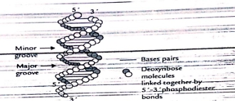
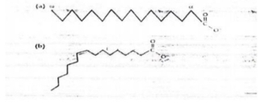
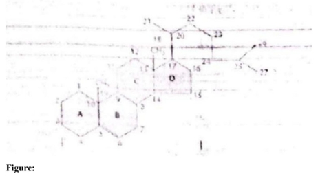

i. The normal reference range is typically 6.0 to 8.3 g/dL (60-83 g/L).
ii. Serum.
iii. Ranges are established by testing a large, healthy representative population and calculating the mean value ± 2 standard deviations (capturing 95% of the healthy population).
iv. Albumin; it makes up approximately 55-60% of total plasma proteins.
v. Maintenance of colloid osmotic pressure (oncotic pressure) or transport of various substances (e.g., hormones, fatty acids, drugs).
vi. C-reactive protein (CRP) or Fibrinogen (Acute phase reactants).
vii. Acute phase reactant / Globulin.
viii. The Liver.
| Monosaccharide | Amino Sugar Formed |
|---|---|
| Glucose | |
| Galactose | |
| Mannose |
| Sugar | Reduced Product (Sugar Alcohol) |
|---|---|
| Glucose | |
| Galactose | |
| Mannose |
(a) 1. Deoxy sugars (e.g., β-D-2-deoxyribose)
2. Amino sugars (e.g., D-glucosamine).
(b)
* Deoxy sugars: Formed via the reduction of a hydroxyl group ($-\text{OH}$) to a hydrogen atom ($-\text{H}$) at a specific carbon atom (catalyzed by enzymes like ribonucleotide reductase).
* Amino sugars: Formed by replacing a hydroxyl group (typically at the C-2 position) with an amino group ($-\text{NH}_2$), often donated by an amino acid like glutamine.
(c) Amino sugars (specifically, unique amino sugars like desosamine found in macrolide structures, which disrupt bacterial protein synthesis).
(d) Deoxy sugars are monosaccharides where one or more hydroxyl groups have been replaced by hydrogen atoms. In β-D-2-deoxyribose, a structural core of D-ribose undergoes this substitution strictly at the C-2 position, resulting in a $-\text{CH}_2-$ methylene bridge instead of a $-\text{CH(OH)}-$ motif inside its five-membered furanose ring system.
(e) Completed Table:
* Glucose → Glucosamine (Chitosamine)
* Galactose → Galactosamine (Chondrosamine)
* Mannose → Mannosamine
(f) Completed Table:
* Glucose → Sorbitol (Glucitol)
* Galactose → Dulcitol (Galactitol)
* Mannose → Mannitol
(g) Sorbitol (and Dulcitol in cases of galactosemia). Under hyperglycemic states, excess glucose is converted to sorbitol via aldose reductase. Because sorbitol cannot readily diffuse out of cells and is metabolized slowly by sorbitol dehydrogenase in the lens, its accumulation exerts osmotic pressure, drawing water into the lens fiber cells and promoting cataract formation.

a) The two strands run in opposite directions; one strand is oriented in the 5' to 3' direction, while its complementary strand is aligned 3' to 5'.
b) Approximately 3.1 billion base pairs (3.1 X 10^9 base pairs) per haploid genome.
c) Approximately 10 base pairs (often rounded to 10) per full structural helical turn in standard B-DNA.
d)
e) Consists of 2 polydeoxyribonucleiotides of opposite polarity wound around each each other on a common axis in a right handed helical structure.
f) A-DNA: A right-handed helix that is shorter, wider, and more compact than B-DNA. It forms under dehydrated (low water) conditions. Has about 11 Base Pairs per turn
Z-DNA: A left-handed helix with a characteristic zigzag sugar-phosphate backbone. It forms in regions with alternating purine-pyrimidine sequences (e.g., GC repeats) and high salt concentrations. Has about 12 base pairs per turn.
g) The Meselson-Stahl experiment proved that DNA replication is semiconservative (where each strand of the original molecule serves as a template for a new strand).
The Mechanism of Replication - Unwind: Helicase opens the DNA helix at the origin (ori) to create a replication fork. Topoisomerase (DNA gyrase) relieves mechanical strain ahead of it, and SSB proteins keep the strands separated.
Build: Primase lays down a short RNA primer. DNA Polymerase III builds new strands only in the 5' to 3' direction: Leading strand: Built continuously toward the fork. Lagging strand: Built discontinuously away from the fork in short Okazaki fragments.
Seal: DNA Polymerase I replaces the RNA primers with DNA, and DNA Ligase glues the fragments together.
h) A base analogue is a chemical compound structurally similar to normal nitrogenous bases ($A, T, G, C$). Because of this likeness, polymerases mistakenly insert them into replicating strands during cell division. As drugs, they stall transcription/replication or create massive replication errors, selectively halting rapidly dividing cancerous or viral cell populations.
i) 3'-TGCGTATTTTAGCGGG-5'
J) Transfer RNA is a small structural RNA molecule (75-90 nucleotides). Its role is to carry amino acids from the cytoplasm to ribosomes, matching its specific anticodon loop with the corresponding mRNA codon during translation.
K) (a) Secondary structure of tRNA (Cloverleaf model)
(b) Tertiary structure of tRNA (L-shaped model)
L) Ribosomal RNA (rRNA), Transfer RNA (tRNA), and Messenger RNA (mRNA). Ribosomal RNA (rRNA) accounts for the highest percentage (approx 80%) of total cellular RNA.
| Biological Function | Corresponding Lipid |
|---|---|
| Energy storage, thermal insulation | |
| Keeps the skin lubricated | |
| Membrane components | |
| Membrane components of nervous tissue and myelin sheath | |
| Precursor of biologically useful compounds (sex hormones, steroids) |

(a) Fatty acids and Glycerol.
(b) Cholesterol (or other steroids) and Terpenes (or fat-soluble vitamins like Vitamin A).
(c) Acetyl-CoA (produced via β-oxidation).
(d) Lipids are not true polymers. Unlike proteins, carbohydrates, and nucleic acids, which form large macromolecules via covalent polymerization of monomer units, lipids are smaller molecules that assemble into large structures (like membranes) non-covalently through hydrophobic interactions.
(e) Amphipathic (or amphiphilic).
(f) 1. The total number of carbon atoms (chain length).
2. The number, position, and configuration (cis/trans) of double bonds (degree of unsaturation).
(g) Completed Table:
* Energy storage, thermal insulation → Triacylglycerols (Triglycerides)
* Keeps the skin lubricated → Waxes (or Sebum lipids)
* Membrane components → Phospholipids (Glycerophospholipids) and Cholesterol
* Membrane components of nervous tissue and myelin sheath → Sphingolipids (Sphingomyelin / Glycosphingolipids)
* Precursor of biologically useful compounds → Cholesterol
(h)
* Structure (a): 18:0 (Stearic acid)
* Structure (b): 18:1 Δ9 (Oleic acid) [assuming standard 18-carbon unsaturated model presented in standard curriculum diagrams].
(i) Fatty acid (a). Saturated fatty acids have straight chains that pack closely together, maximizing van der Waals interactions, which requires more thermal energy to disrupt compared to the kinked chain of unsaturated fatty acid (b).
(j) Arachidonic acid is normally considered non-essential (or conditionally essential) because the body can synthesize it by elongating and desaturating linoleic acid. However, because linoleic acid is strictly essential and cannot be manufactured de novo, its absence completely blocks the biosynthetic pathway, making arachidonic acid strictly dependent on direct dietary intake.
(k) Iodine Value (or Iodine Absorption Number). This measures the mass of iodine in grams consumed by 100 grams of a chemical substance; halogen addition occurs directly across the carbon-carbon double bonds.

(a) 1. Phospholipids (e.g., glycerophospholipids, sphingophospholipids)
2. Glycolipids (e.g., cerebrosides, gangliosides).
(b) Cardiolipin (Diphosphatidylglycerol).
(c) It acts as a surfactant to reduce surface tension at the alveolar air-fluid interface. This prevents alveolar collapse (atelectasis) during expiration and minimizes the physical effort required by the newborn to inflate the lungs with their first breaths.
(d) Phospholipases (specifically Phospholipase A₁ or Phospholipase A₂).
(e) Lysophospholipids (such as Lysolecithin), which act as powerful detergents that disrupt and dissolve red blood cell membranes, causing hemolysis.
(f) Sterols.
(g) Cholesterol (or Ergosterol / Sitosterol).
(h)
1. Free (unesterified) cholesterol: Contains a free polar hydroxyl group ($-\text{OH}$) at C-3, making it amphipathic and structurally active.
2. Esterified cholesterol (Cholesteryl ester): The hydroxyl group at C-3 is covalently bound to a fatty acid via an ester linkage. This removes its polarity, rendering the molecule completely hydrophobic and specialized for internal storage or lipoprotein transport core packing.
(i) Free (unesterified) cholesterol, because its polar $-\text{OH}$ head allows it to align with phospholipid heads while its hydrophobic ring system packs alongside fatty acid tails.
(j) The three major kinds are Phospholipids, Glycolipids, and Cholesterol. Among these, Cholesterol is the most hydrophobic because its structure consists almost entirely of a bulky hydrocarbon carbon-ring system with only a single polar hydroxyl group.
(k) 1. Bile acids / Bile salts (e.g., cholic acid)
2. Steroid hormones (e.g., progesterone, testosterone, cortisol)
3. Vitamin D₃ (cholecalciferol).
(l) The structure is the cholesterol framework / steroid carbon skeleton. Rings A, B, C, and D together comprise the complete cyclopentanoperhydrophenanthrene nucleus (the steroid nucleus).